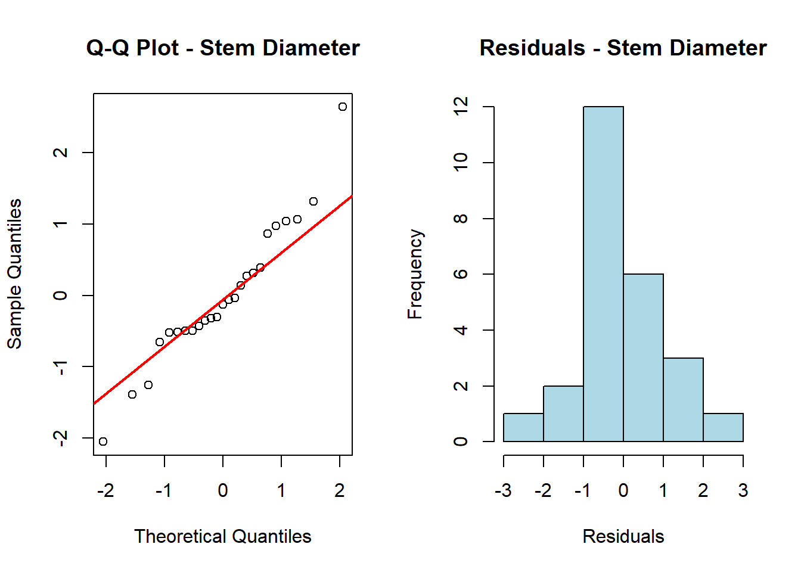
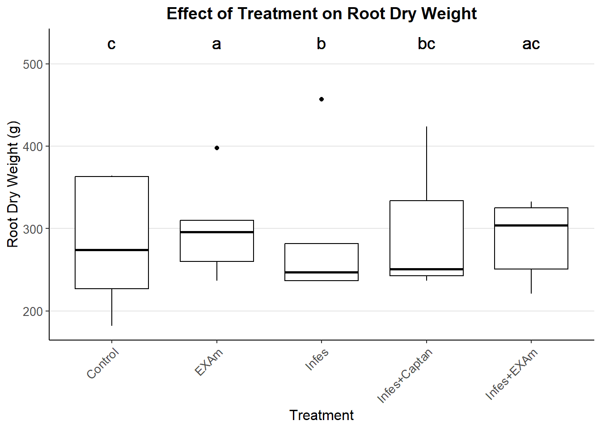
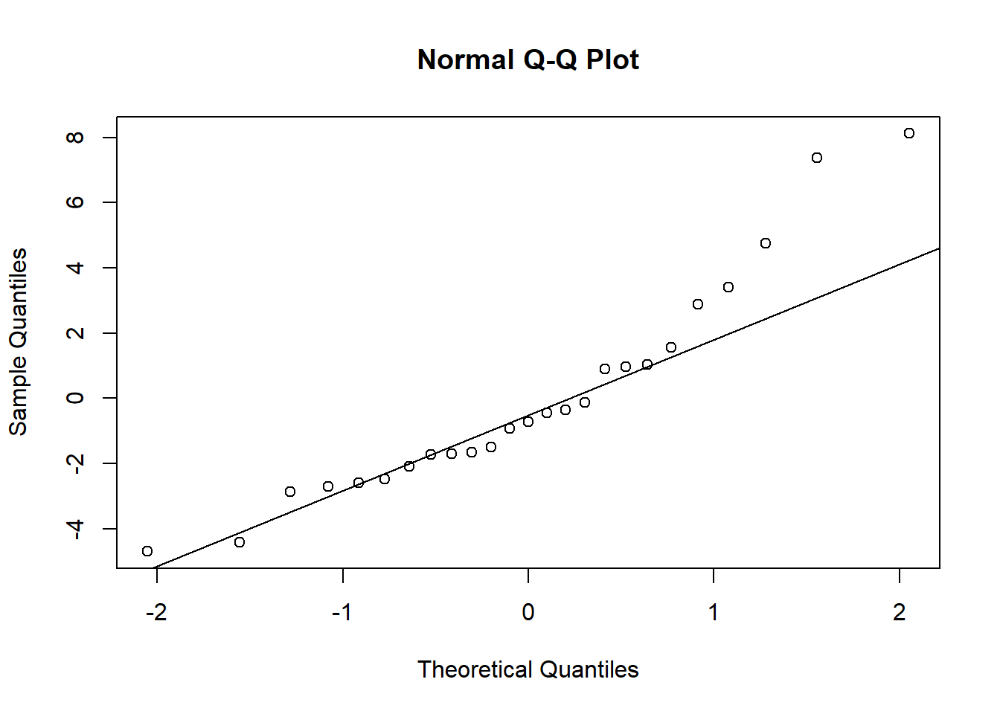
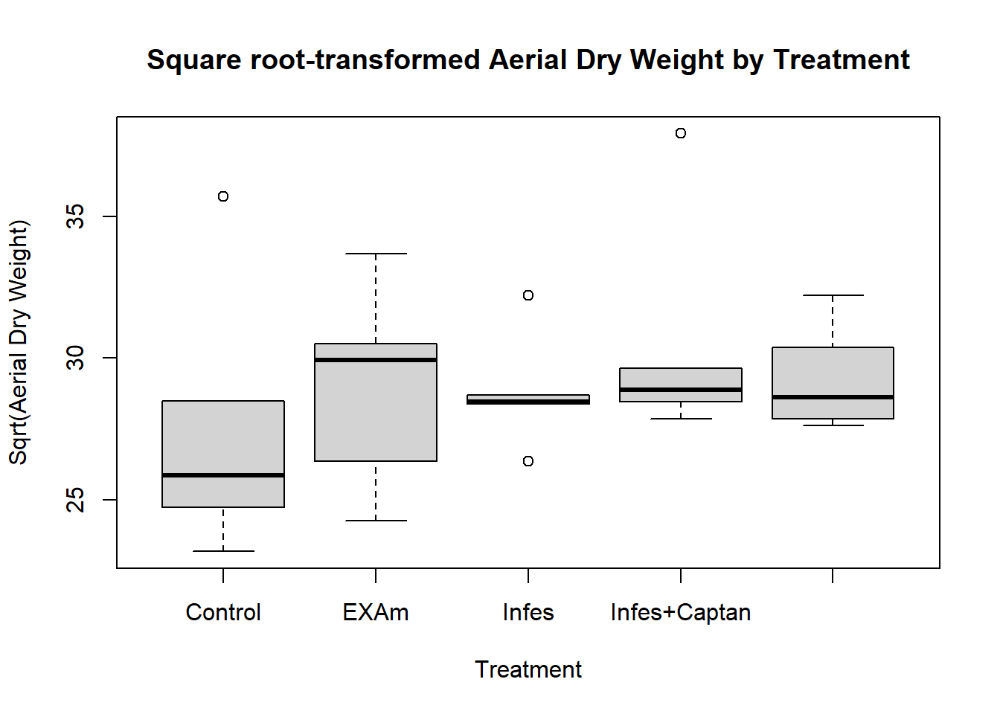
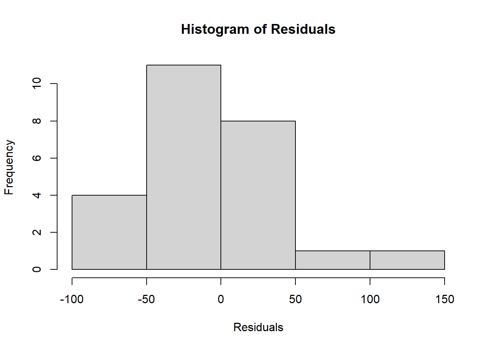
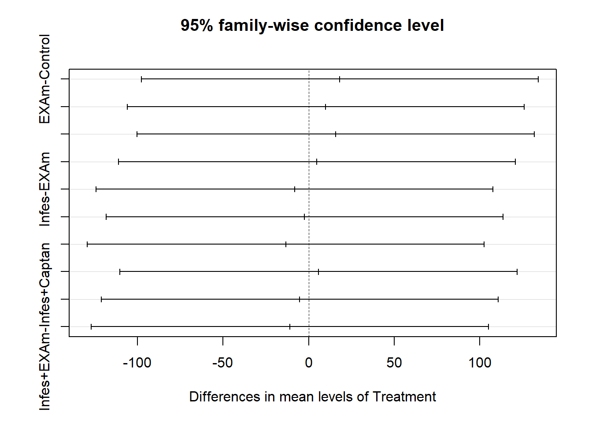
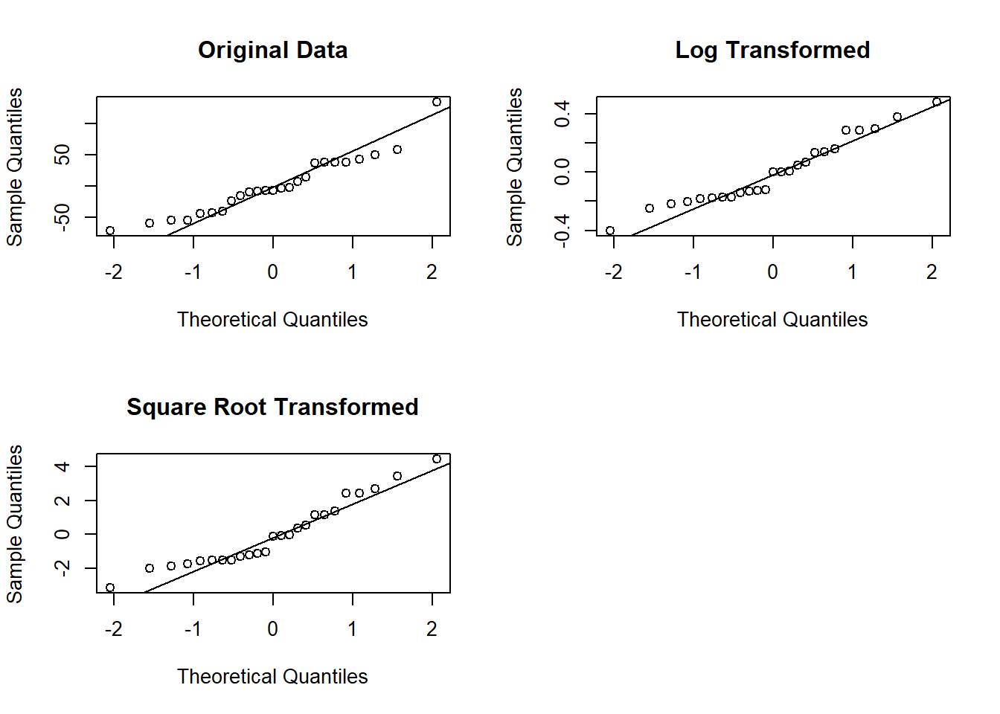
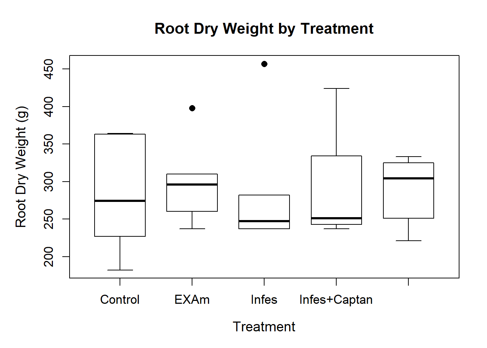

library(ggplot2)
library(readxl)
library(agricolae)
library(multcompView)
library(dplyr)anlysis
Introduction
This analysis examines three key plant growth parameters: - Stem diameter - Aerial dry weight - Root dry weight
The data is divided into five blocks and five treatments as follows:
Treatment 1 : “Control” - Without treatment application (extract or fungicide) and without pathogen inoculation/infestation.
Treatment 2 : “EXAm” - With treatment application (extract or fungicide) but without pathogen inoculation/infestation.
Treatment 3 : “Infes” - Without treatment application (extract or fungicide) but with pathogen inoculation/infestation.
Treatment 4 : “Infes + EXAm” - With treatment application (extract) and pathogen inoculation/infestation.
Treatment 5 : “Infes + Captan” - With treatment application (fungicide) and pathogen inoculation/infestation.
Load Required Libraries
Data Import
df <- read_excel("DATA/tomato-clean.xlsx", sheet = "plants")Statistical Analysis
Stem Diameter Analysis
ANOVA
stem_aov <- aov(`Stem diameter` ~ Treatment * Block, data = df)
summary(stem_aov) Df Sum Sq Mean Sq F value Pr(>F)
Treatment 4 86.52 21.629 14.325 5.23e-05 ***
Block 1 17.55 17.547 11.621 0.00389 **
Treatment:Block 4 8.57 2.142 1.419 0.27561
Residuals 15 22.65 1.510
---
Signif. codes: 0 '***' 0.001 '**' 0.01 '*' 0.05 '.' 0.1 ' ' 1Normality
res_stem <- residuals(stem_aov)
shapiro.test(res_stem)
Shapiro-Wilk normality test
data: res_stem
W = 0.9572, p-value = 0.3615Interpretation:
Treatments: The treatment factor is highly significant (p = 5.23e-05), indicating that the treatment has a clear and strong effect on the outcome. The variability in the response is primarily explained by the treatment, and there are clear differences between the groups.
Blocks: The block factor is also significant (p = 0.00389), suggesting that blocks contribute to explaining the variability in the outcome. This means that grouping observations into blocks has a meaningful impact on the results.
Treatment:Block Interaction: The interaction between treatment and block is not significant (p = 0.27561), indicating that the effect of treatments is consistent across blocks. There is no evidence that the treatment effect differs depending on the block.
Visualize the behavior of the data
par(mfrow=c(1,2))
qqnorm(res_stem, main = "Q-Q Plot - Stem Diameter")
qqline(res_stem, col = "red", lwd = 2)
hist(res_stem,
main = "Residuals - Stem Diameter",
xlab = "Residuals",
col = "lightblue",
border = "black")
Post hoc test tukey
tukey_stem <- TukeyHSD(stem_aov, "Treatment")Warning in replications(paste("~", xx), data = mf): non-factors ignored: BlockWarning in replications(paste("~", xx), data = mf): non-factors ignored:
Treatment, Blockprint(tukey_stem) Tukey multiple comparisons of means
95% family-wise confidence level
Fit: aov(formula = `Stem diameter` ~ Treatment * Block, data = df)
$Treatment
diff lwr upr p adj
EXAm-Control 1.6206667 -0.7791055 4.02043884 0.2758704
Infes-Control -3.5073333 -5.9071055 -1.10756116 0.0032235
Infes+Captan-Control -2.7826667 -5.1824388 -0.38289449 0.0196103
Infes+EXAm-Control -0.8453333 -3.2451055 1.55443884 0.8100380
Infes-EXAm -5.1280000 -7.5277722 -2.72822782 0.0000717
Infes+Captan-EXAm -4.4033333 -6.8031055 -2.00356116 0.0003701
Infes+EXAm-EXAm -2.4660000 -4.8657722 -0.06622782 0.0426329
Infes+Captan-Infes 0.7246667 -1.6751055 3.12443884 0.8798573
Infes+EXAm-Infes 2.6620000 0.2622278 5.06177218 0.0264227
Infes+EXAm-Infes+Captan 1.9373333 -0.4624388 4.33710551 0.1445574tukey_pvalues_stem <- tukey_stem$Treatment[, "p adj"]
tukey_letters_stem <- multcompLetters(tukey_pvalues_stem)$LettersInfes (“b”): These plants belong to group “b,” indicating that their yield response is significantly lower than that of the EXAm-treated plants (“a”) and different from the untreated healthy control (Control, “c”). This means that the Infes treatment caused a significant decrease in plant yield.
Infes + Captan (“bc”): These plants share a group with Infes (“b”) and Control (“c”), indicating that Captan provides moderate improvement, but not enough to restore the plants to the level of healthy plants treated with EXAm (“a”).
Infes + EXAm (“ac”): These plants belong to the “ac” group, showing results similar to EXAm-treated healthy plants (“a”) and also overlapping with the Control group (“c”). This suggests that Infes + EXAm treatment partially restores the plants’ health, but does not fully reach the level of the EXAm-treated plants.
library(ggplot2)
tukey_letters <- c(
"Control" = "c",
"EXAm" = "a",
"Infes" = "b",
"Infes+EXAm" = "ac",
"Infes+Captan" = "bc"
)
ggplot(df, aes(x = Treatment, y = `Root dry weight`, fill = Treatment)) +
geom_boxplot(width = 0.7, color = "black", fill = "white") +
geom_text(aes(label = tukey_letters[Treatment],
y = max(`Root dry weight`) * 1.15),
size = 5) +
labs(title = "Effect of Treatment on Root Dry Weight",
x = "Treatment",
y = "Root Dry Weight (g)") +
theme_classic() +
theme(
plot.title = element_text(size = 14, face = "bold", hjust = 0.5),
axis.title = element_text(size = 12),
axis.text = element_text(size = 10),
axis.text.x = element_text(angle = 45, hjust = 1),
legend.position = "none",
panel.grid.major.y = element_line(color = "grey90"),
panel.grid.minor = element_blank()
)
Aerial Dry Weight Analysis
#ANOVA
aerial_aov <- aov(`Aereal dry weight` ~ Treatment* Block, data = df)
summary(aerial_aov) Df Sum Sq Mean Sq F value Pr(>F)
Treatment 4 72740 18185 0.424 0.7890
Block 1 173932 173932 4.056 0.0623 .
Treatment:Block 4 135067 33767 0.787 0.5511
Residuals 15 643290 42886
---
Signif. codes: 0 '***' 0.001 '**' 0.01 '*' 0.05 '.' 0.1 ' ' 1Treatments: The analysis showed that the treatments (Control, EXAm, Infes, Infes + EXAm, Infes + Captan) did not have a statistically significant effect on the stem diameter, aerial dry weight, or root dry weight (p-values > 0.05). This suggests that any observed differences were likely due to random variation rather than the treatments themselves.
Blocks: Similarly, the block effect (p > 0.05) and the interaction between treatment and block (p > 0.05) were not significant, indicating that variability across blocks and their interaction with treatments did not have a meaningful impact on the measured growth parameters.
Residuals: A substantial portion of the variability remained unexplained (Residuals Sum of Squares = X), which could indicate unaccounted-for factors or limitations in the experimental setup.
In General: The absence of significant treatment effects could be due to insufficient treatment effects, variability in implementation or measurement, or limited statistical power because of the small number of repetitions per block. To improve future studies, increasing the number of replications, refining measurement methods, ensuring consistent application of treatments, and considering additional environmental or biological factors would be beneficial.
Suggestion: Although the ANOVA did not show significant results, post-hoc tests like Tukey’s HSD can be performed to investigate potential trends or differences between treatment groups.
Normality
resAerealWeight <- residuals(aerial_aov)
shapiro.test(resAerealWeight)
Shapiro-Wilk normality test
data: resAerealWeight
W = 0.956, p-value = 0.3406After the data is log-transformed, the residuals do follow a normal distribution. This transformation was successful, indicating that the data now satisfies the normality assumption of ANOVA.
Data transformation
library(readxl)
data <- read_excel("DATA/tomato-clean.xlsx", sheet = "plants")# Log transformation
data$aerial_weight_log <- log(data$`Aereal dry weight`)
# Re-run ANOVA with transformed data
aerial_weight_log <- aov(aerial_weight_log ~ Treatment, data = data)
summary(aerial_weight_log) Df Sum Sq Mean Sq F value Pr(>F)
Treatment 4 0.1194 0.02986 0.529 0.716
Residuals 20 1.1299 0.05649 # Test normality of residuals
shapiro.test(residuals(aerial_weight_log))
Shapiro-Wilk normality test
data: residuals(aerial_weight_log)
W = 0.93853, p-value = 0.1369Interpretation:
Treatments: The treatment factor is not significant (p = 0.716), indicating that the treatment does not have a statistically significant effect on the outcome (aerial weight in this case). The variability observed in the response variable is likely due to random variation rather than the treatment.
Residuals: The residuals have a sum of squares of 1.1299, with a mean square of 0.05649. This suggests that there is some unexplained variability in the data, but it does not appear to be systematically related to the treatments.
Shapiro-Wilk Normality Test: The Shapiro-Wilk test for normality of residuals gives a W value of 0.93853 and a p-value of 0.1369. Since the p-value is greater than 0.05, we fail to reject the null hypothesis that the residuals are normally distributed. This suggests that the assumption of normality holds for the residuals, making the ANOVA results valid.
# Square root transformation
data$aerial_weight_sqrt <- sqrt(data$`Aereal dry weight`)
# Re-run ANOVA with transformed data
aerial_weight_sqrt <- aov(aerial_weight_sqrt ~ Treatment, data = data)
summary(aerial_weight_sqrt) Df Sum Sq Mean Sq F value Pr(>F)
Treatment 4 22.59 5.648 0.443 0.776
Residuals 20 254.93 12.747 # Test normality of residuals
shapiro.test(residuals(aerial_weight_sqrt))
Shapiro-Wilk normality test
data: residuals(aerial_weight_sqrt)
W = 0.91226, p-value = 0.03424Interpretation:
Treatments: The treatment factor is not significant (p = 0.776), indicating that the treatment does not have a statistically significant effect on the outcome (aerial weight in this case). This suggests that the observed differences in aerial weight are likely due to random variation and not due to the effect of the treatment.
Residuals: The residuals have a sum of squares of 254.93, with a mean square of 12.747. While there is variability in the residuals, it does not appear to be systematically related to the treatments, which aligns with the non-significant treatment effect.
Shapiro-Wilk Normality Test: The Shapiro-Wilk test for normality of residuals gives a W value of 0.91226 and a p-value of 0.03424. Since the p-value is less than 0.05, we reject the null hypothesis that the residuals are normally distributed. This indicates that the residuals are not normally distributed, which could potentially affect the validity of the ANOVA results. Non-normal residuals suggest that the assumptions of ANOVA may not be fully met, and the results should be interpreted with caution.
# QQ plot
qqnorm(residuals(aerial_weight_sqrt))
qqline(residuals(aerial_weight_sqrt))
# Boxplot
boxplot(aerial_weight_sqrt ~ Treatment, data = data,
main = "Square root-transformed Aerial Dry Weight by Treatment",
ylab = "Sqrt(Aerial Dry Weight)",
xlab = "Treatment")
Non-Parametric Test
The transformations do not achieve normality, therefore Kruskal-Wallis test which does not require the assumption of normality will be performed
# Kruskal-Wallis test
kruskal_test <- kruskal.test(data$`Aereal dry weight` ~ data$Treatment)
print(kruskal_test)
Kruskal-Wallis rank sum test
data: data$`Aereal dry weight` by data$Treatment
Kruskal-Wallis chi-squared = 2.2502, df = 4, p-value = 0.6898There was no significant difference between the different treatment groups. This is consistent with the results of the previous parametric test (ANOVA). Even with the non-parametric approach, there was still no treatment effect found.
Root Dry Weight Analysis
#ANOVA
library(readxl)
df <- read_excel("DATA/tomato-clean.xlsx", sheet = "plants")
str(df)tibble [25 × 5] (S3: tbl_df/tbl/data.frame)
$ Treatment : chr [1:25] "Control" "Control" "Control" "Control" ...
$ Block : num [1:25] 1 2 3 4 5 1 2 3 4 5 ...
$ Stem diameter : num [1:25] 18.4 20.6 19.9 20.4 21.9 ...
$ Aereal dry weight: num [1:25] 669 611 537 1275 811 ...
$ Root dry weight : num [1:25] 182 274 227 364 363 310 237 296 260 398 ...head(df)# A tibble: 6 × 5
Treatment Block `Stem diameter` `Aereal dry weight` `Root dry weight`
<chr> <dbl> <dbl> <dbl> <dbl>
1 Control 1 18.4 669 182
2 Control 2 20.6 611 274
3 Control 3 19.9 537 227
4 Control 4 20.4 1275 364
5 Control 5 21.9 811 363
6 EXAm 1 21.9 1135 310root_aov <- aov(`Root dry weight` ~ Treatment * Block, data = df)
summary(root_aov) Df Sum Sq Mean Sq F value Pr(>F)
Treatment 4 1138 285 0.081 0.98712
Block 1 54516 54516 15.440 0.00134 **
Treatment:Block 4 5210 1303 0.369 0.82706
Residuals 15 52964 3531
---
Signif. codes: 0 '***' 0.001 '**' 0.01 '*' 0.05 '.' 0.1 ' ' 1root_aov <- aov(`Root dry weight` ~ Treatment * Block, data = df)
summary(root_aov) Df Sum Sq Mean Sq F value Pr(>F)
Treatment 4 1138 285 0.081 0.98712
Block 1 54516 54516 15.440 0.00134 **
Treatment:Block 4 5210 1303 0.369 0.82706
Residuals 15 52964 3531
---
Signif. codes: 0 '***' 0.001 '**' 0.01 '*' 0.05 '.' 0.1 ' ' 1Block effect significantly explains the variability in the data, suggesting systematic differences across blocks.
Treatment and Treatment:Block interaction are not significant, meaning treatments have no measurable effect on the outcome variables, and this effect does not change across blocks.
The high residual variance implies that other unmeasured factors or noise contribute to the unexplained variability.
Normality
resRootWeight <- residuals(root_aov)
shapiro.test(resRootWeight)
Shapiro-Wilk normality test
data: resRootWeight
W = 0.93925, p-value = 0.1422Interpretation:
Original hypothesis of Shapiro-Wilk test (H₀): the data follow a normal distribution.
The p-value: 0.1422 > 0.05, the original hypothesis could not be rejected, indicating that the residual data did not significantly deviate from normal distribution.
Visualize the behavior of the data
hist(resRootWeight, main = "Histogram of Residuals", xlab = "Residuals")
qqnorm(resRootWeight)
qqline(resRootWeight, col = "red")
Post hoc test tukey
# Perform Tukey HSD test
tukey_result <- TukeyHSD(root_aov, "Treatment")Warning in replications(paste("~", xx), data = mf): non-factors ignored: BlockWarning in replications(paste("~", xx), data = mf): non-factors ignored:
Treatment, Blockprint(tukey_result) Tukey multiple comparisons of means
95% family-wise confidence level
Fit: aov(formula = `Root dry weight` ~ Treatment * Block, data = df)
$Treatment
diff lwr upr p adj
EXAm-Control 18.2 -97.84912 134.2491 0.9876729
Infes-Control 10.0 -106.04912 126.0491 0.9987653
Infes+Captan-Control 15.8 -100.24912 131.8491 0.9927632
Infes+EXAm-Control 4.8 -111.24912 120.8491 0.9999323
Infes-EXAm -8.2 -124.24912 107.8491 0.9994341
Infes+Captan-EXAm -2.4 -118.44912 113.6491 0.9999957
Infes+EXAm-EXAm -13.4 -129.44912 102.6491 0.9961473
Infes+Captan-Infes 5.8 -110.24912 121.8491 0.9998564
Infes+EXAm-Infes -5.2 -121.24912 110.8491 0.9999069
Infes+EXAm-Infes+Captan -11.0 -127.04912 105.0491 0.9982079# Visualize the Tukey results
plot(tukey_result)
All treatments, including EXAm, Infes, Infes + Captan, and Infes + EXAm, fall into the same group (“a”). This indicates that there are no significant differences in root dry weight across the treatments and the Control group.
Data transformation
# 1. Log transformation
df$root_weight_log <- log(df$`Root dry weight`)
root_weight_log <- aov(root_weight_log ~ Treatment, data = df)
summary(root_weight_log) Df Sum Sq Mean Sq F value Pr(>F)
Treatment 4 0.019 0.00474 0.078 0.988
Residuals 20 1.213 0.06064 # Test normality of log-transformed data
resRootWeight_log <- residuals(root_weight_log)
shapiro.test(resRootWeight_log)
Shapiro-Wilk normality test
data: resRootWeight_log
W = 0.94723, p-value = 0.217# 2. Square root transformation
df$root_weight_sqrt <- sqrt(df$`Root dry weight`)
root_weight_sqrt <- aov(root_weight_sqrt ~ Treatment, data = df)
summary(root_weight_sqrt) Df Sum Sq Mean Sq F value Pr(>F)
Treatment 4 1.11 0.278 0.061 0.993
Residuals 20 91.25 4.562 # Test normality of square root-transformed data
shapiro.test(residuals(root_weight_sqrt))
Shapiro-Wilk normality test
data: residuals(root_weight_sqrt)
W = 0.93336, p-value = 0.1039# Visual inspection
# QQ plots
par(mfrow=c(2,2))
# Original data
qqnorm(resRootWeight, main="Original Data")
qqline(resRootWeight)
# Log transformed
qqnorm(resRootWeight_log, main="Log Transformed")
qqline(resRootWeight_log)
# Square root transformed
qqnorm(residuals(root_weight_sqrt), main="Square Root Transformed")
qqline(residuals(root_weight_sqrt))
# Boxplot
par(mar=c(5,5,4,2))
boxplot(`Root dry weight` ~ Treatment, data = df,
main = "Root Dry Weight by Treatment",
ylab = "Root Dry Weight (g)",
xlab = "Treatment",
cex.lab = 1.2,
cex.axis = 1.1,
cex.main = 1.3,
col = "white",
border = "black",
boxwex = 0.7,
whisklty = 1,
outpch = 16,
outcex = 1.2)
grid(nx = NA, ny = TRUE, lty = 2, col = "gray")
par(mar=c(5,4,4,2))Non-Parametric Test
# Kruskal-Wallis test
kruskal_test <- kruskal.test(df$`Root dry weight` ~ df$Treatment)
print("Kruskal-Wallis Test Results:")[1] "Kruskal-Wallis Test Results:"print(kruskal_test)
Kruskal-Wallis rank sum test
data: df$`Root dry weight` by df$Treatment
Kruskal-Wallis chi-squared = 0.46906, df = 4, p-value = 0.9764# Dunn's test for multiple comparisons (if needed)
if(!require(dunn.test)) install.packages("dunn.test")Loading required package: dunn.testlibrary(dunn.test)
# Perform Dunn's test with Bonferroni adjustment
dunn_test <- dunn.test(df$`Root dry weight`, df$Treatment,
method="bonferroni",
kw=TRUE,
label=TRUE) Kruskal-Wallis rank sum test
data: x and group
Kruskal-Wallis chi-squared = 0.4691, df = 4, p-value = 0.98
Comparison of x by group
(Bonferroni)
Col Mean-|
Row Mean | Control EXAm Infes Infes+Ca
---------+--------------------------------------------
EXAm | -0.538225
| 1.0000
|
Infes | 0.043058 0.581283
| 1.0000 1.0000
|
Infes+Ca | -0.344464 0.193761 -0.387522
| 1.0000 1.0000 1.0000
|
Infes+EX | -0.236819 0.301406 -0.279877 0.107645
| 1.0000 1.0000 1.0000 1.0000
alpha = 0.05
Reject Ho if p <= alpha/2There was no significant difference between the different treatment groups. This is consistent with the results of the previous parametric test (ANOVA). Even with the non-parametric approach, there was still no treatment effect found.